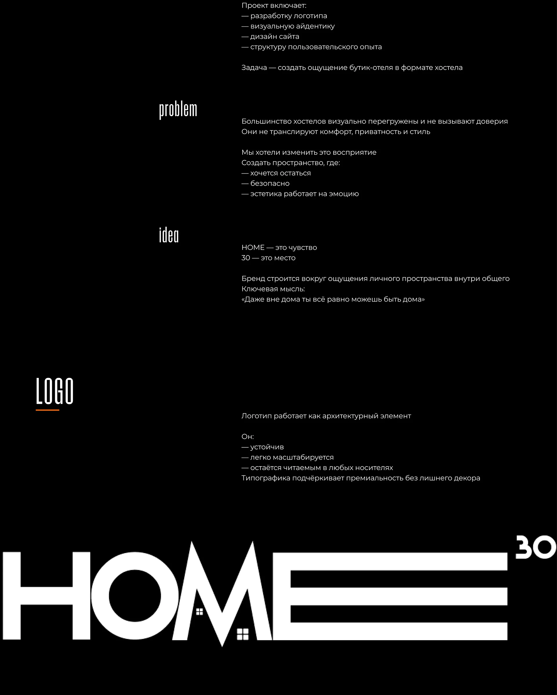
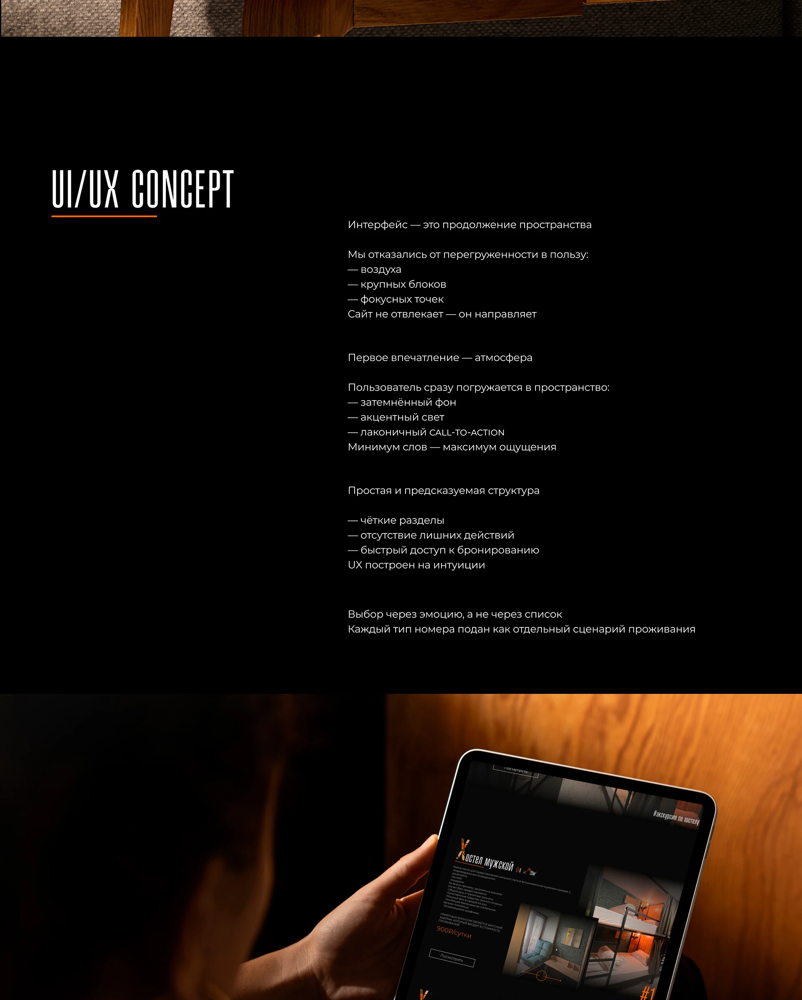

INTERDIZ / ДИЗАЙН И РАЗРАБОТКА
Чувствуйте себя как дома. Где угодно.
О ПРОЕКТЕ
ГОРОДСКОЙ
КОМФОРТ
С ХАРАКТЕРОМ.
HOME30 — хостел нового формата в Астрахани. Минимализм и функциональность сочетаются здесь с теплом и ощущением дома.
Для проекта разработаны логотип, визуальная айдентика и сайт, который передаёт атмосферу пространства.
ИДЕЯ И АЙДЕНТИКА
ДОМА —
ДАЖЕ В ПУТИ.
В основе бренда лежит ощущение личного пространства внутри общего. Логотип с архитектурными мотивами поддерживает эту идею и остаётся узнаваемым на разных носителях.
ВИЗУАЛЬНАЯ КОНЦЕПЦИЯ
ТЁМНЫЙ ФОН.
ТЁПЛЫЙ СВЕТ.
Глубокий чёрный, янтарное свечение и мягкие градиенты передают приватность и уют. Визуальная система вдохновлена камерными отелями и ночным светом в интерьере.
UX / UI
АТМОСФЕРА
И ЯСНЫЙ ПУТЬ.
Крупные блоки, тонкие линии и свободное пространство помогают сосредоточиться на содержании. Понятные разделы ведут гостя от знакомства с хостелом к выбору и бронированию.
МОБИЛЬНАЯ ВЕРСИЯ
ВСЁ ВАЖНОЕ
ПОД РУКОЙ.
На небольшом экране сайт сохраняет атмосферу проекта и позволяет удобно изучать пространство и варианты размещения.
РЕЗУЛЬТАТ
САЙТ, КОТОРЫЙ
ПЕРЕДАЁТ МЕСТО.
Айдентика, интерфейс и визуальная атмосфера объединены в цельный опыт знакомства с HOME30.
Посмотреть оригинальную презентацию




